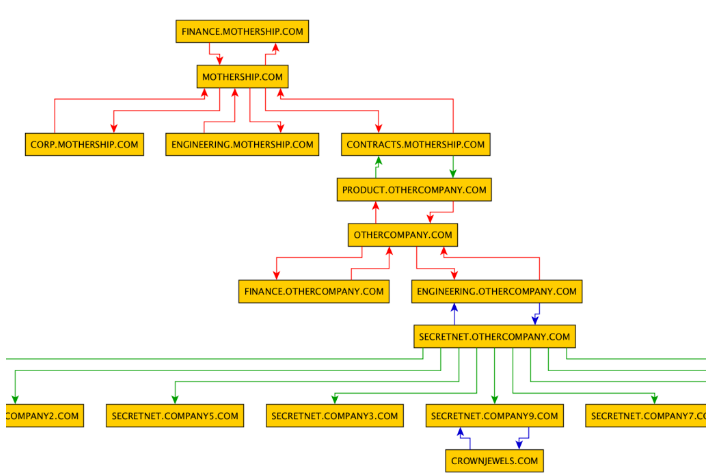

While on a recent engagement where I had thousands of lines of trust relationships dumped from one Domain Controller, I developed a quick tool to parse the output from Veil PowerView and use the networkx library in python to analyze and plot it. This allowed me to quickly find a way to my target domain and helped me discover which systems would have access to the most shares for pillaging. It also forced me to look at the bigger picture and decide what major impacts this trust abuse could cause for my target organization.
The script is a shell based wrapper for the networkx library and is specifically built for the trust.csv generated by PowerView. It provides basic analysis and output techniques. With it, you can get the top 5 most central nodes, find the shortest path between two domains, find isolated domains (those with only one neighbor), and dump the CSV data into a couple of formats (GML, GraphML) for viewing in your favorite visualization tool.
The script can be found here. Note: I used yEd on my Mac for image visualization. In order to get the colors and the labels to show on GraphML formats, you have to map the properties. I learned it here.
Here are some screenshots from what I was able to do with a sample of data:
*This output comes from a previous version that mapped trust direction. The current tool maps access direction since it was more useful. Simple flip of the arrows!
